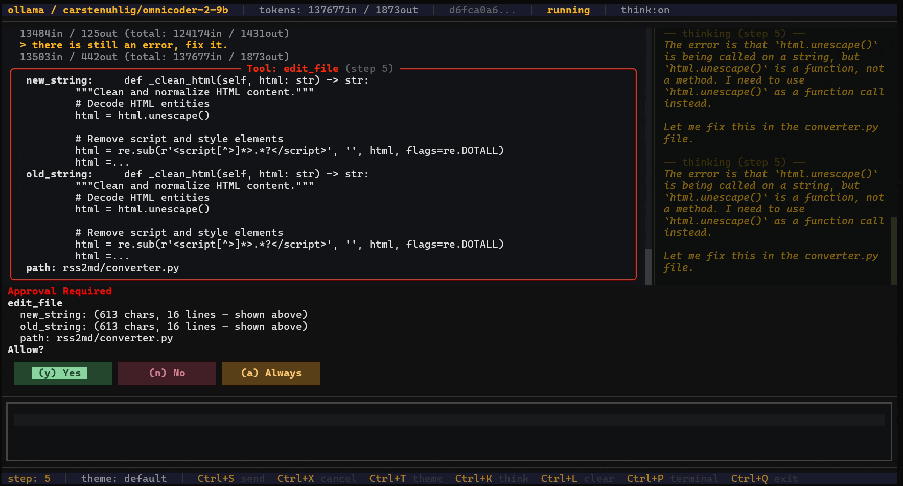

█████╗ █████╗ ██████╗ ██╔══██╗██╔══██╗██╔══██╗ ███████║███████║██████╔╝ ██╔══██║██╔══██║██╔══██╗ ██║ ██║██║ ██║██║ ██║ ╚═╝ ╚═╝╚═╝ ╚═╝╚═╝ ╚═╝
open source python. ~80-line core loop. swap providers mid-session.
does what claude code, codex, and pi mono do — maybe a bit more.
if you want something you can actually read and modify, might be useful.
"agent_servers": { "Aar": { "type": "custom", "command": "aar", "args": ["acp"] } }
a typical session — the agent reads what it needs to, makes the change, checks its work.

most agent frameworks are opaque. aar isn't. open agent/core/loop.py and read the whole thing.
no magic, no framework soup. extend it to fit how you actually work.
~80-line main loop. the entire execution path fits in your head. agent/core/loop.py
anthropic, openai, gemini, ollama, or any openai-compatible endpoint. switch with /model mid-session.
path restrictions, command deny-lists, approval gates. wsl / docker / landlock sandbox modes built in.
live token + cost tracking. configurable budget limits. warns before you burn through your credits.
every event, tool call, and result is a pydantic model. no raw dicts. serializable, debuggable.
three-tier extension api — global, per-user, per-project. event hooks, custom tools, slash-commands.
every run saved as jsonl. resumable. forkable from any point. your history is your audit trail.
zed and vscode via the agent client protocol. direct stdio — no cloud relay, no port needed.
| command | use case | notes |
|---|---|---|
aar run "…" |
ci / automation | one-shot, runs to completion, exits. |
aar chat |
interactive cli | conversational loop with approval prompts. |
aar tui |
tui | rich tui with live token counters. |
aar tui --fixed |
full-screen tui | textual ui — fixed bars, mouse support, file picker. open-source equivalent of claude code / codex. |
aar serve |
http api | sse streaming, embeddable as asgi app. |
aar acp ide |
zed / vscode | acp stdio agent. editor connects directly. |
aar acp --http |
remote acp | acp over http/sse for remote or programmatic clients. |
set an env var and go. switch mid-session with /model.
run fully local with ollama — no api key, no cloud.
-e makes it a live install — edits to agent/ are reflected immediately.aar chat · aar tui ·
aar run "…" · aar serve
{ "agent_servers": { "Aar": { "type": "custom", "command": "aar", "args": ["acp"] } } }
all in docs/ — plain markdown, no external hosting.
full history at CHANGELOG.md and GitHub Releases.
agent-client-protocol SDK@ opens a modal file browser in the fixed TUIapache 2.0. if it's useful to you, great. star it, fork it, send a pr.